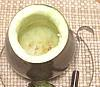

2
-----
8
10
2
1/8
2
2
1/2
1/4
1/2
-----
|
#
---
oz
in
T
T
t
t
t
---
|
Eggplant
-- Stuffing
Black Mushroom
Pork, lean
Scallions
Ginger Root
Soy Sauce
Rice Wine
Salt
Pepper
Sugar
-----------

|
Prep - (45 min)
- Cut off the stem end of EGGPLANT at a point where the
diameter is about 3-1/2 inches. Keep the stem end. Take a small knife
and cut a ring around the top end leaving about 3/4 inch all around.
Hollow out the eggplant leaving about 3/4 inch walls throughout (see
Photo Gallery). A
sharp butter curler is the perfect tool for this job. Put the
scooped out pieces in a bowl with water acidulated with some citric
acid or lemon juice and a little salt to keep it from browning. You
may need some for this recipe and the rest can be used for something
else (see Note-1). Rinse out the eggplant
shell with the acidulated water to keep it from browning too.
- Soak MUSHROOMS in hot water for about 30 minutes. Squeeze
out, stem, and slice into very thin strips, then slice crosswise
into tiny bits.
- Chop PORK quite small. Chop SCALLIONS small.
Slice GINGER very thin, then chop fine.
- Thoroughly mix all Stuffing items.
- Stuff the Eggplant with the Pork Mixture. If it isn't
completely full (packed medium) pour it out and mix with some of the
scooped out eggplant chopped small. Re-attach the stem end using
toothpicks.
Run - (1-1/4 hr)
- Place Eggplant on a heatproof plate and steam tightly covered
over boiling water until the center reaches at least
165°F/73°C. This will take between 45 minutes and an hour,
depending on size of eggplant and efficiency of your steamer.
- Slice the Eggplant crosswise about 1 inch thick and serve.
|